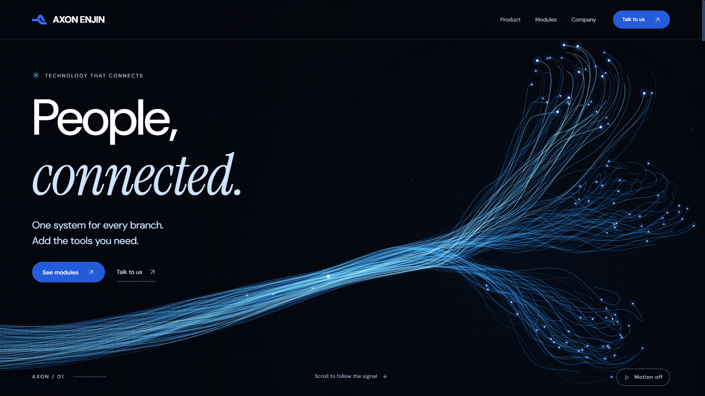
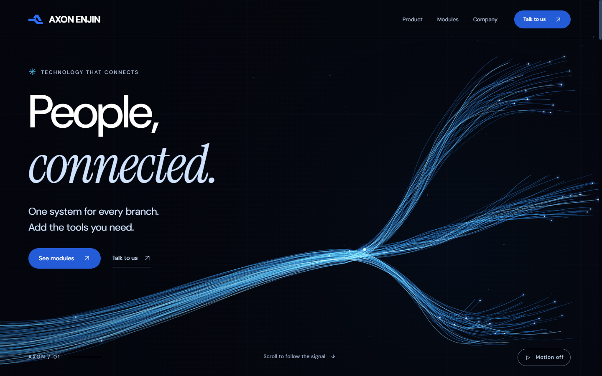

Living network: mock → website
Iteration 02. Compare the approved images with the implemented sections.
The fibre geometry now has distributed junctions and organic terminal curves.


Show the previous implementation

1 / 8
Iteration 02. Compare the approved images with the implemented sections.
The fibre geometry now has distributed junctions and organic terminal curves.

